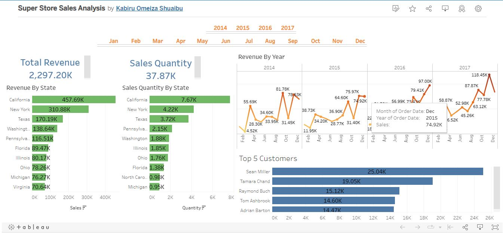

2022
This is a data science project to locate the best Indian restaurants in New York.
We can use this information to inform Indian families about the best place
to stay in New York, where they will feel at home.
This bot is like a Logistic Regression bot in that it uses the Extreme Gradient Boosting Classifier (xgb classifier)
to predict whether or not workers will be promoted based on their performance and other criteria.
Its a more sophisticated variant of Logistic Regression.

This is a data visualization dashboard using Tableau and the Super Store data set. The Super Store data set is a sample data set that is provided with Tableau and contains
data on orders placed at a fictional retail store. The dashboard will allow you to explore and visualize different aspects of the data in order to gain insights and
understanding about the sales and performance of the store. You can use the dashboard to see trends and patterns in the data, compare different dimensions and measures,
and drill down into specific areas of interest. Whether you are a data analyst, business intelligence professional, or just interested in exploring data, this dashboard
should provide a wealth of information and insights.

This is my GitHub repository which contains various projects that are related to data analysis and data science.
These projects include the use of statistical and machine learning techniques to analyze and understand datasets,
as well as the use of data visualization tools to present the findings in an easily understandable format.
The projects may range from simple analysis of small datasets to more complex projects involving large
and varied data sources.

This are tableau projects related to data visualization.
These projects aim to represent data in a clear and visually appealing manner,
using charts, graphs, and other visual elements to communicate information effectively.
The goal of these projects is to help users understand and analyze data in a more intuitive
and efficient way, using the power of visualization to highlight trends, patterns, and insights
that might not be immediately apparent from raw data.
I write Information Technology articles on boardspeck for educational purposes.
These articles cover a wide range of topics within the IT field, including programming,
cybersecurity, network administration, and more. I hope that my articles will be a helpful
resource for anyone looking to learn more about these topics. Thank you for your interest and
I hope you find my articles informative and useful.
GeekOut with Omeiza is a YouTube channel that provides educational resources
for individuals interested in learning about data analysis.
The channel offers tutorials and lessons on various topics related
to data analysis, helping viewers gain a deeper understanding of
this important field.